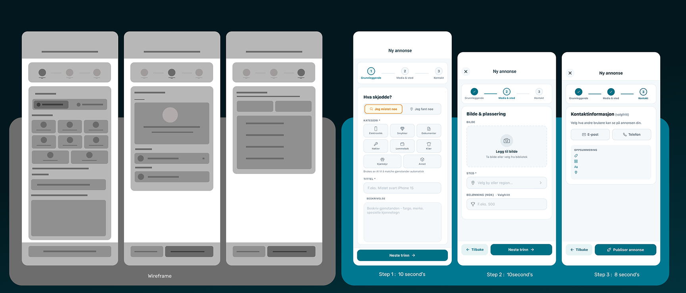
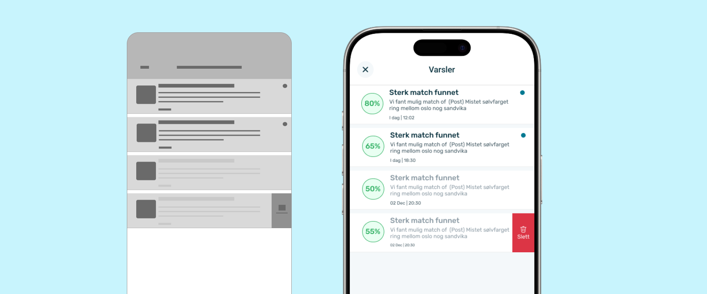
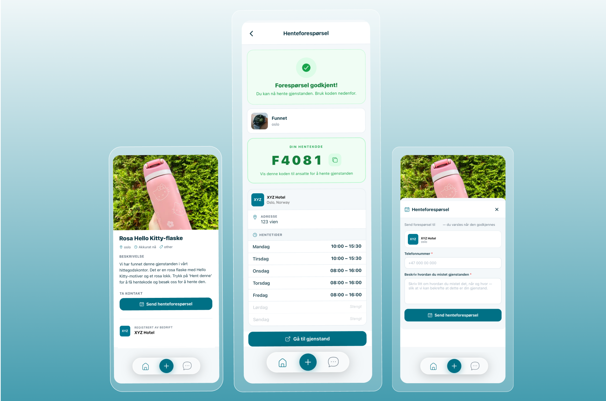

MistetFunnet
Norway's first AI-assisted lost-and-found infrastructure. Built hands-on with AI-assisted tooling. Live on the App Store.
Every venue keeps its own list. None of them connect.
Norway has no central system for lost-and-found. Every venue runs its own internal log — hotels, trains, airports, cafés, police stations. None of them connect.
A citizen who loses something has to contact each one alone. Most give up before their items are ever found.

Illustration: the current "system."
Field survey of 75 Norwegian residents, Oslo and Ålesund, 2025. The 150–200M NOK figure is an internal estimate.
I built the platform end-to-end.
I designed and built the product itself — research, UX, UI, the design system, and the AI-assisted build. Around the product: a CFO on the financial model, a commercial mentor, an academic mentor. The product is mine; the company is a team.
My role covered product strategy, user research, UX, UI, the design system, and the full build — developed hands-on with AI-assisted tooling (Claude Code) on React Native and Supabase. Every architecture decision, screen, and iteration is mine; AI accelerated the implementation. The platform's core was built without a single hired engineer.
First full-time engineer joins Q3 2026.

Abdullah Al Numan

Dr. Wasi Ahmed

Karsten D Wetteland

Ivar John Erdal
75 Norwegian residents. One consistent answer.
I ran a field survey of 75 residents in Oslo and Ålesund through 2025. Three findings shaped everything that followed.
Support a national platform.
Nine in ten respondents support a single national platform for lost-and-found.
Would pay today.
39% confirmed they would pay for it today. I treat this as the hard number in every external conversation.
Might, under conditions.
51% said they might. Expressed support is not willingness to pay — so the 39% is the number that counts.

The first design-partner LOI — Rebel AS, signed by CTO Håkon Solheim
One nation, one feed. Every post, every source, one place.
The problem is fragmentation — fifty Facebook groups, hundreds of venue spreadsheets, the police hittegods office, all running in isolation. The obvious response is to build a better lost-and-found app. But a better app inside a fragmented system doesn't solve the problem. It adds another silo.
So I removed the concept of source from the data layer.

Every post — whether from a hotel staffer logging a found laptop in the SaaS dashboard, a commuter reporting a lost wallet from the mobile app, or a private finder posting a jacket from the web — lands in the same feed. The AI matches across all of them.
A citizen searching for their wallet doesn't need to know whether it was handed in at the Radisson, photographed on a Vy train, or found by a stranger on Karl Johans gate. One search. One feed. One country.
This is the architectural decision that makes everything else work. AI matching matters because it operates on a unified data layer. Hittegodsloven compliance matters because every post is held to the same legal framework. The network effect compounds because finders, venues, and citizens all see each other's posts in real time.
In short Removing "source" from the data layer is the one bet the whole product rests on — every post, every channel, one feed.
A unified feed across three user types meant one schema, one moderation system, one trust model — significantly harder than three separate apps. It also inverted the natural product order: I built the venue-side dashboard before there were venues paying to use it, because without venues posting, citizen searches return nothing.
But it's also the moat. A foreign competitor can build the AI, translate the interface, and price competitively. They cannot rebuild the network of venues, citizens, and finders that all post into the same database.
One schema. Three roles. One feed.
The "one feed" decision had to survive a real data model. The schema had to handle three different user types posting the same content type — with different permissions, verification needs, and legal obligations — without splitting the database into three.
I built it as a single Post entity with a role attribute. Every post — Mistet (lost) or Funnet (found) — carries the same core fields. The role of the poster determines what additional fields are required and what actions are permitted, but the post itself sits in one shared table.
This is what makes four-way matching possible. Citizen-to-citizen, citizen-to-business, business-to-citizen, business-to-business — the AI doesn't need to know who posted. It just matches posts against posts.
- Report lost
- Search & claim
- In-app messaging
- Bulk log found
- Custody & pickup codes
- Legal 30-day workflow
- Post a found item
- Hand-off coordination
In short A single Post table with a role attribute is what makes four-way AI matching possible — the AI just matches posts against posts.
Norwegian. Calm. Accessible.
Norwegian citizens already associate yellow and dark green with state services — Posten, NAV, Skatteetaten. MistetFunnet is not a government service. It needed to read as trustworthy private infrastructure that works alongside the state, not as another bureaucratic touchpoint.

Identity system — Rubik typeface, teal-and-mustard palette, magnifying-glass mascot.
One component library. Three surfaces.
The mobile app, SaaS dashboard, and public web search all share a single Figma component library. Building one library across three surfaces was non-negotiable for a solo designer — every component had to work in mobile, tablet, and desktop without forking.
State-driven components, not duplicate components.
The post card exists once in the library. It accepts a state prop — Mistet, Funnet, Matched, Claimed, Archived — and renders differently in each, including different background colors, action buttons, and metadata visibility. One component, five visual states, used everywhere.
Tokens before components.
Color, spacing, typography, radii, and shadows are defined as semantic tokens before any component is built. The brand teal is --color-brand-primary, not #0F4C4C. This let me change the entire brand color in one place when we tested four palette variations.
Norwegian-first content patterns.
Every text component is built around Norwegian first, with English fallback. Long compound nouns like hentegodkjenningsforespørsel break standard 14px body grids — so the text component has built-in word-wrap and overflow handling that English-first design systems don't typically need.

Component library, MistetFunnet design system.
Three flows, three real risks.
Three flows carried the highest design risk: the citizen report-lost flow (had to be under 30 seconds or people give up), the AI match-result screen (had to communicate confidence without overpromising), and the pickup request & approval flow (had to prevent false claims without turning venue staff into detectives). Each went through wireframes, continuous testing throughout development, and refinement before shipping.
Report a lost item
Wireframe goal — get from app launch to submitted post in under 30 seconds, on a mobile screen, while the user is stressed.
What I changed — the wireframe had four screens: category, photo, details, confirm. Testing showed users skipped the category screen or chose wrong because they were panicking — and the AI didn't need it. I removed the category step and let the AI infer category from the photo. Final flow: photo, location, optional description, submit. Three screens. Design target: under 30 seconds. Every tested user hit it — on both the app and the dashboard.

Match found
Wireframe goal — show confidence in a match without making the user click through five screens to see the original item.
What I changed — the wireframe showed the match as a notification leading to a separate details screen. Testing showed users wanted to see the found item's photo immediately, in the notification itself. The final design shows the photo, the confidence score, and the next action in the feed directly — no second screen. No second screen — the decision happens in the feed.

Pickup request & approval
Wireframe goal — make sure the right person collects the right item, without turning venue staff into detectives.
What I designed — a three-step handover flow built around venue approval, not just a code. The owner sends a pickup request from the item page with their phone number and details (P1–P2). The request lands in the venue's dashboard, where staff see who's asking and approve or decline — the decision stays with the people holding the item. On approval, the owner receives a pickup code together with the venue's address and pickup time window (P3), and staff verify the code at handover.
Behind this visible flow sits a layered verification system — identity checks, ownership challenges, and documented handover receipts for the venue's records. I'm keeping the specifics out of a public case study deliberately: it's the anti-fraud layer, and describing it in detail would weaken it. Every step is logged — request, approval, verification, timestamp — creating the custody trail Norwegian lost-property law expects. Happy to walk through the full verification design in a conversation.

The dashboard that pays for everything.
Citizens use the app free — venues are the customers. Reception staff aren't designers' dream users: they're busy, interrupted, and lost property is the least important part of their job. So every dashboard screen was designed around one question: how do I take work away from this person?
Register anywhere
The problem — Items are found on the floor, at the counter, in a corridor — never at the back-office laptop. Every step between finding an item and logging it ("I'll photograph it and enter it later") is where logging dies. Unlogged items can never be matched.
The design — Venue staff log in as Bedrift in the same mobile app citizens use. Find an item, open the app, photograph it where it lies — the AI fills category, brand, and description from the photo; staff confirm and post. Under 30 seconds, standing up. The item's full lifecycle — pickup requests, custody, the 30-day legal timer — is then managed from the dashboard. The phone captures; the dashboard manages.

Venue mobile registration — photograph where the item lies, AI fills the rest · Demo venue account
Pickup requests
The problem — Staff at the counter deciding whether a stranger owns a wallet — with a queue behind them.
The design — The decision moves off the counter. Requests arrive in a queue with the claimant's details; staff approve or decline between tasks, on their own time. By the time someone walks in, they're already expected — the counter moment is just a code check.

Pickup requests — approve or decline before anyone arrives at the counter · Demo venue account
Compliance view
The problem — Norwegian law gives venues real duties — 30-day holding, police handover documents, finder's fee — and most venues quietly fail them because the paperwork is manual.
The design — The law runs itself. The 30-day timer starts when the item is logged. The handover document and fee calculation generate automatically when it expires. Staff never operate compliance — the system does it while they work.

Compliance view — 30-day timers, Lost and Found Act export, DPIA status · Demo venue account
Mobile captures, dashboard manages — same account, same feed, no transfer step in between.
In short Three screens, one principle: the dashboard doesn't ask staff to do lost-and-found work — it does the work, and asks them to confirm.
Three engineering layers run under one feed.
Unified posting
Citizens post from the mobile app in about 30 seconds. Venues post from the SaaS dashboard. Same data model, same feed.
Four-way AI matching
Built on Google Gemini. Reads photos; extracts brand, type, colour, and distinguishing features. Confidence-scored, typically 65–90% in Norwegian. Recognizes Nordic brands — Norrøna, Bergans, Helly Hansen, Fjällräven.
Messaging & pickup codes
Owner and finder coordinate inside the app. A pickup code gates every handover so no false claim completes. Full custody log for the venue.
Built with WCAG 2.1 AA accessibility from the first sprint.
Two honest lessons.
Validate the venue sales process before building the venue dashboard.
I built the dashboard from my own model of what venues needed, then went out to find venues. The right order was the opposite — talk to twenty venues first, listen to what reception staff actually struggle with, then build. The Rebel AS LOI came late enough that I'd already over-engineered parts of the dashboard. We have since simplified.
Name the engineering gap publicly, not just internally.
As a sole designer-builder, I underestimated how much investor and partner conversations would slow down when the engineering depth wasn't visible. We now name the gap in every external conversation — first full-time engineer joining Q3 2026, senior hire alongside the 2027 seed. Honesty about gaps removes more friction than any polished pitch deck does.